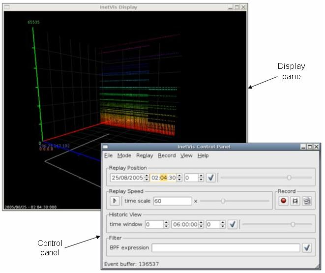

documentation and help
Last revision: 2007-11-08
1. Description
1.1. Concept
1.2. Input
1.2.1. Supported Protocols
1.3. Plotting Scheme
1.4. Features
2. Usage
2.1. Command Line
2.2. User Interface and Controls
2.2.1. Control Panel
2.2.2. InetVis Display
2.2.2.1. Navigation via Mouse Controls
2.2.2.2. Navigation via Keyboard Controls
2.2.2.3. Other Keyboard Controls
2.2.3. Plotter Settings Dialogue
2.2.4. Reference Frame Settings Dialogue
2.3. Usage Notes
2.3.1. Tool tips as Helpful Hints
2.3.2. Applying Settings
2.3.3. Setting the Home Network Range Before Playback
2.3.4. Setting Address Ranges with CIDR Notation
2.3.5. Recording
2.3.5.1. Record to Capture File
2.3.5.2. Taking an Image Snapshot
2.3.5.3. Dumping Rendered Frames to Image Files
2.3.5.4. Location of Recorded Files
2.3.6. Administrator Privileges
3. Requirements and Performance
3.1. Operating Platform
3.2. Requirements to Run Pre-packaged Binary
3.3. Minimum System Specification
3.4. Typical Performance
4. Known Issues
5. Building and Developing InetVis
5.1. Requirements
5.2. Recommend Development Tools
6. Acknowledgement
7. Disclaimer
8. Contact
InetVis - Internet Visualization
version: 0.9.3
release date: 2007/11/07
InetVis is a 3-D scatter-plot visualization for network traffic. It's more or less like a media player, but for network traffic. At the moment its just an academic toy for reviewing packet capture files, but may be useful in other endeavours. For example, InetVis has been used to verify and critique the accuracy of scan detection algorithms in the Snort IDS and Bro IDS.
The original source of inspiration for InetVis is the "The Spinning Cube of Potential Doom" (by Stephen Lau). Whilst many other network visualizations employ lines as a metaphor for connection, the 3-D scatter-plot of points proves to scale well with larger volumes of data. The visualization makes network scanning and port scanning readily evident as horizontal and vertical lines respectively. InetVis offers numerous extensions that enhance the original basic concept (see 1.4. Features). For a description of "The Spinning Cube of Potential Doom" see:
InetVis visualizes packet captures of network traffic using Libpcap to either
Tcpdump, Wireshark and Snort are examples of applications can use the Libpcap file format.

./inetvis
The display pane and control panel are in separate windows, with a plotter settings dialogue and reference frame settings dialogue accessed via the 'view' menu of the control panel
The visualization display pane.


Majority of the controls, buttons and fields in the GUI provide tool tips to help explain their function and usage. Tool tips can be seen by hovering the mouse cursor over the GUI component in question.
Many of the settings are grouped together and require the user to click the apply button (button with a tick icon) once they are ready to apply the new settings.
After opening a file, set the home network address (in Plotter Settings dialogue) to scale the data along the blue axis - otherwise all traffic is rendered in a narrow single band with respect to the x-axis. A 'guess' button can help infer this home network range by checking the destination addresses contained within the file. In the case of monitoring the local network interface (live packet capture), the application will automatically retrieve the home network address from Libpcap.
Setting the address ranges entails using 'dots-slash' (CIDR) notation to specify network sub-domains. For example 192.168.0.0/24 is the network with address 192.168.0.0, subnet mask 255.255.255.0, giving the network range 192.168.0.0 to 192.168.0.255. The number after the slash represents the number of bits in the subnet mask. Thus the octet classed network masks are:
Values other than /8, /16 and /24 are trickier as they involve bits in between the four octets of a 32 bit IP address. The Plotter Settings dialogue has a field below the dots-slash edit boxes that show the range and subnet mask to help as guide. For bits added on to a full octet (i.e. /8+x or /16+x or /24+x), the following octet in the mask will have the value:
| /+1 | /+2 | /+3 | /+4 | /+5 | /+6 | /+7 |
| .128 | .192 | .224 | .240 | .248 | .252 | .254 |
For example, 146.231.120/20 has subnet mask 255.255.248.0 and represents 8 class C networks in the range 146.231.120.0 to 146.231.127.255.
All three record methods, recording to capture file, taking a single image snapshot, or dumping rendered frames to image files, can be used simultaneously and used in conjunction with playback.
InetVis can record rendered frames to image files. Frame record sessions work much the same way as capture file record sessions. Whilst the record button with the film symbol is on, the application dumps each frame to an image file, and stops when the button is toggled off. For each frame, a raw copy of the image buffer is copied into an uncompressed image file (.ppm format). Consequently, recording image frames uses up a large amount of disk space at a rapid rate and can degrade the applications performance - setting the window to a smaller resolution will help reduce the performance hit.
During frame recording, the timing is fixed to produce frames suitable for encoding video clips at 25 frames per second (fps). Even if, whilst recording, it appears that playback is degraded to less than 25 fps, the timing between each frames is calculated with respect to the data in the file and according to the replay speed. Therefore, when the frame capture files are encoded to video a clip at 25 frames per second, the video clip has the correct timing and replay speed while despite the recording process appearing slower. As a consequence, playback of some video clips may appear faster that the original recording.
Recording back to capture file, taking a snapshot image, or dumping frames, creates a directory hierarchy relative to the InetVis running directory.
Within these directories, sub-directory structures follow and should be self explanatory. Some file and directory names include numeric timestamps of the form yyyymmdd-hhMMsszzz (where MM is minutes and zzz milliseconds) - the timestamps refer to timestamps in the capture file (or live capture).
Administer privileges are required to open a live capture interface of the systems network interface.
The binary is compiled for Linux based systems and optimised for the Intel i686 processor. It requires OpenGL, the Libpcap packet capture library and Trolltech Qt GUI API (as well as other system libraries such as libc6).
At least a Pentium III class processor with 256MB RAM and a 3-D graphics accelerator supporting OpenGL is recommended.
Tested with Intel Core2 (6300) 1.86 GHz CPU, 2GB RAM, GeForce 7600GS (256MB) graphics card.
...this is why the software is Alpha :)
NB! Help improve the software - please report bugs (including tYpos and spelin errors in this doc), user experience, and feature wishes (see 8. Contact).
Written with c++, OpenGL, the Qt API, and Libpcap.
The way I did it.
Based on the "The Spinning Cube of Potential Doom", by Stephen Lau
InetVis was initially developed as a student project at Rhodes University. Special thanks to Barry Irwin (project supervisor), and Shaun Bangay (Graphics honours course lecture of 2005). Their instruction and input has made this project possible.
USE AT YOUR OWN RISK! InetVis is an academic project and not fit for commercial use. Whilst every effort has been made to confirm that the software accurately represents network traffic as intended, the developer(s) make no guarantee that it is error free. The source code is fairly contrived and convoluted as features where hastily hacked in as needed. Review of the code will be non-(non-non-trivial).
Jean-Pierre van Riel
email: jp _dot_ vanriel _at_ gmail _dot_ com
website: http://research.ict.ru.ac.za/G02V2468/
InetVis - Internet Visualisation for network traffic analysis.
Copyright (C) 2006 - 2007, Jean-Pierre van Riel
This program is free software; you can redistribute it and/or modify it under the terms of the GNU General Public License as published by the Free Software Foundation; either version 2 of the License, or (at your option) any later version.
This program is distributed in the hope that it will be useful, but WITHOUT ANY WARRANTY; without even the implied warranty of MERCHANTABILITY or FITNESS FOR A PARTICULAR PURPOSE. See the GNU General Public License for more details.
You should have received a copy of the GNU General Public License along with this program; if not, write to the Free Software Foundation, Inc., 51 Franklin Street, Fifth Floor, Boston, MA 02110-1301, USA.
InetVis makes use of Libpcap/WinPcap, Qt and OpenGL. The open source version of Qt by Trolltech is licensed under the GPL, version 2 (as shown above). According to SGI, use of the OpenGL API requires no license. Libpcap is distributed under the BSD license. WinPcap, the windows derivative of libpcap is licensed by CASE Technologies. As required, the respective licenses are shown below.
License: BSD
Redistribution and use in source and binary forms, with or without modification, are permitted provided that the following conditions are met:
THIS SOFTWARE IS PROVIDED ``AS IS'' AND WITHOUT ANY EXPRESS OR IMPLIED WARRANTIES, INCLUDING, WITHOUT LIMITATION, THE IMPLIED WARRANTIES OF MERCHANTABILITY AND FITNESS FOR A PARTICULAR PURPOSE.